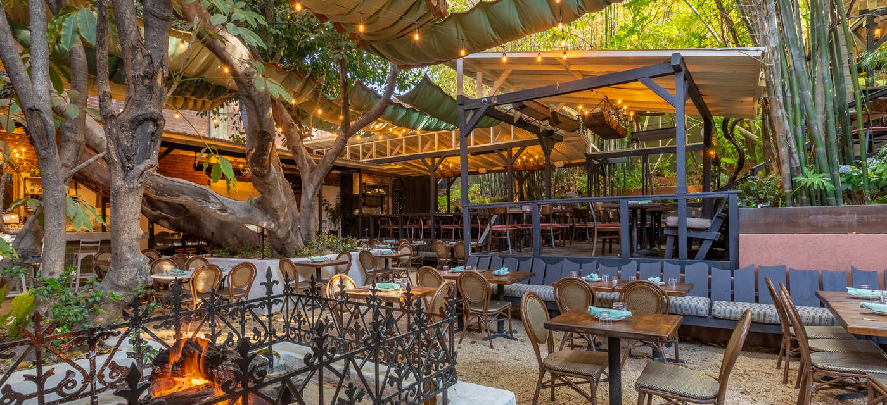
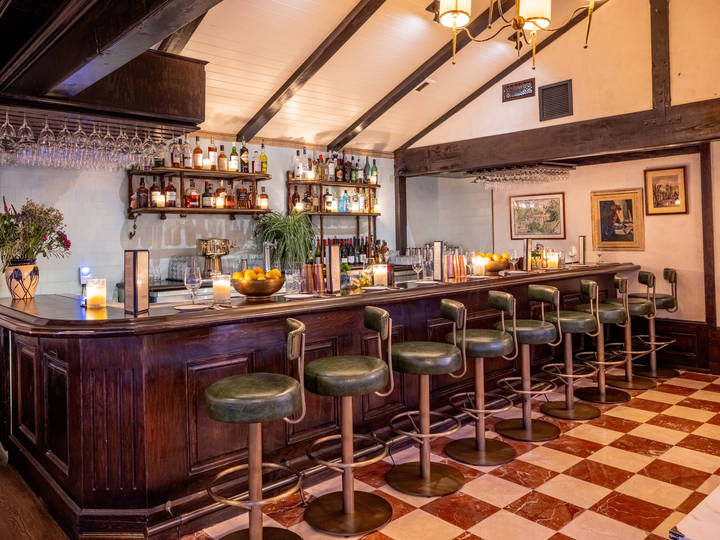
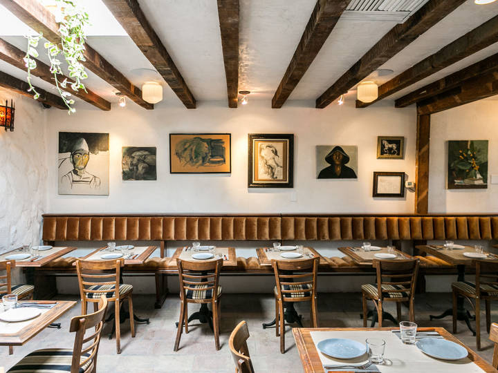
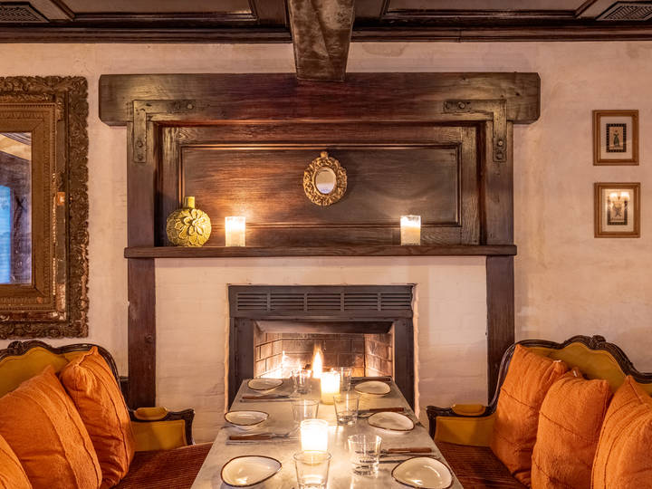
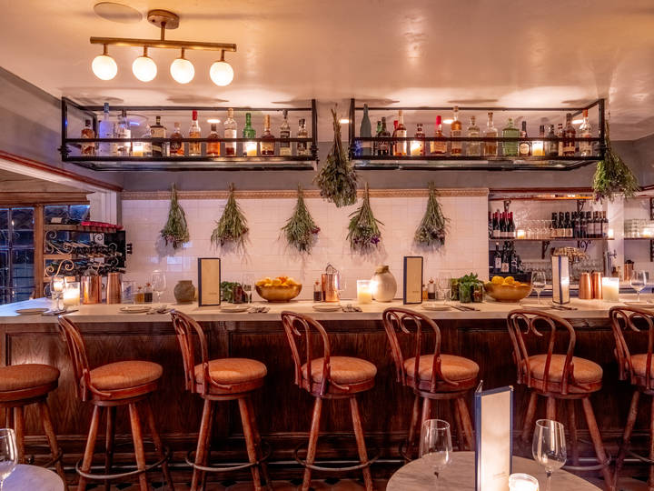
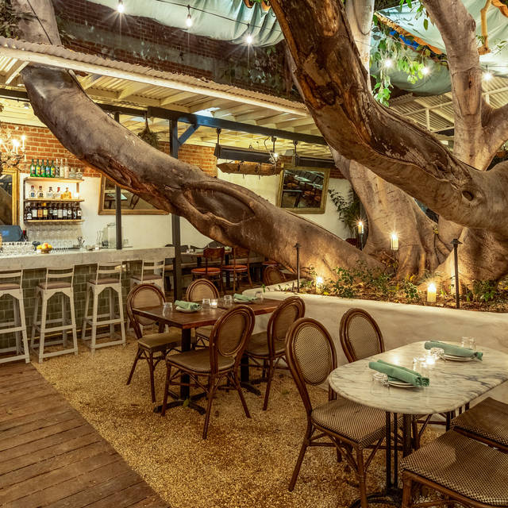
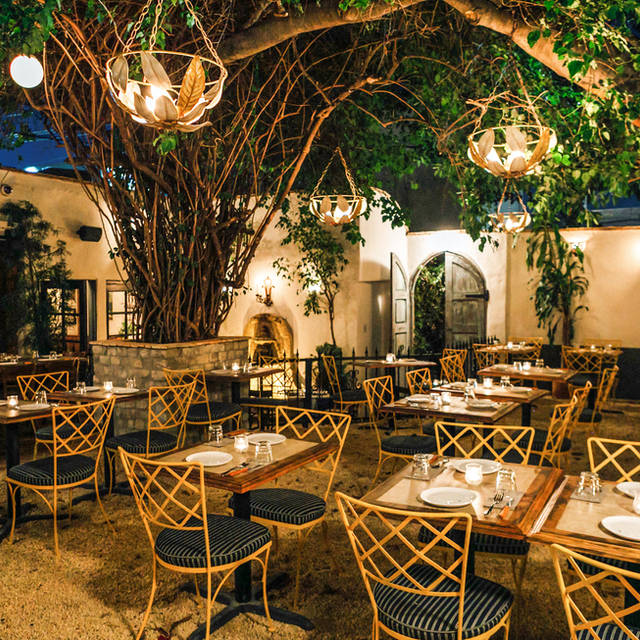
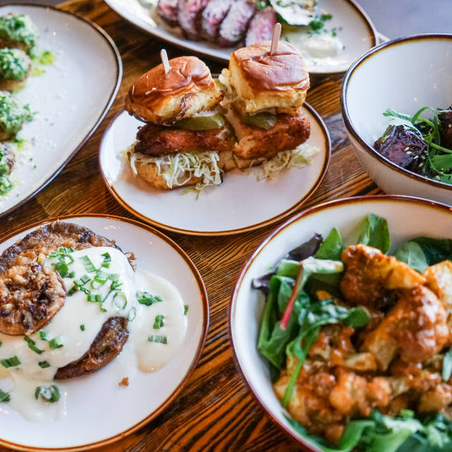

Rebuilding a fire-damaged restaurant on West 6th Street.
Bacari is a Venetian-inspired small plates restaurant with Mediterranean-influenced dishes by Chef Lior Hillel. Owned by brothers Danny and Robert Kronfli, the group has grown to ten locations across Los Angeles and San Diego since opening in West Adams in 2008, and is now expanding to Texas. We're looking for a local architect to take this site from existing conditions to permit and through construction.

Bacari Silver Lake. Tiered decks and a patio built around the trees, the kind of outdoor room we want in Austin.
Site
West 6th StFormer Bar Peached
Interior
~3,400 sfTwo floors
Exterior
~5,000 sfDecks, patio, lot
Hot line
18 ftNo wood oven
Condition
Fire damageFoundation intact
The site today
Lease is in final negotiation.
Ground floor: prep kitchen and a speakeasy.
Upper floor: hot line kitchen, interior bar and a wraparound deck.
Parking-lot level: existing patio and outdoor dining under large oak trees.
The fire left a large hole through the middle. The second floor and roof are heavily damaged; the foundation is sound.
We've asked the landlord for the forensic structural assessment and will share it.
What we want to build
Ground floor: the entire kitchen, prep, storage and restrooms.
Upper floor: a much larger bar and dining room.
Outdoors: reconfigure the existing deck, add new decks, add seating at lot level and build an outdoor bar. Some of it weatherized, and the oaks kept as a feature.
New kitchen, new bars and all-new finishes throughout.
The outdoor layout and flow is where we need the most design thinking.
The Bacari feel
Each location has its own personality, but they share a backyard warmth: bars that open to the patio, mature trees and string lights outside; wood beams, white plaster, vintage art, warm lighting and checkered tile inside.
Inside

Sherman Oaks · main bar

West 3rd · beams and banquette

Sherman Oaks · fireplace nook

Sherman Oaks · herb-hung bar
Outside

Silver Lake · bar open to the patio

West 3rd · garden patio

A table of small plates to share
Services we need
Full permit set to the City of Austin, building and health.
Structural and MEP engineering. We prefer one contract with you as the single point of contact.
Permit expediting.
Health code layout (hand, three-compartment and floor sinks, drains). Chef Lior designs the kitchen and specs the equipment, so no kitchen consultant is needed.
3D renderings and walkthroughs tied to the plans, plus a Matterport scan of existing conditions.
Construction administration, with someone on site two to three times a week.
How we work
Robert leads design with our in-house team. We want a collaborator, not a hand-off.
We don't pick finishes before permit submission. The set covers structure, walls, layout and MEP; finishes are decided during the build.
Layout, structural and MEP changes get locked before construction starts.
The owners are in LA, and Robert can't visit the site for about the first two months. We'd start with the existing structure and deck, design the new decks remotely, and finalize after his visit.
Our past openings were cosmetic refreshes of existing restaurants, so this is our first major rebuild. We have kitchen plans to share, but no prior full plan sets.
Please bring to our first call
Restaurant and bar projects you've completed in Austin, ideally with commercial kitchens or fire restoration.
An all-in fee from start to finish, with architecture, structural, MEP, expediting and construction administration broken out, plus your estimate of city review and permit fees.
Your timeline from kickoff to permit submission, and how you'd phase around Robert's delayed site visit.
Who would be on site during construction, and how often.